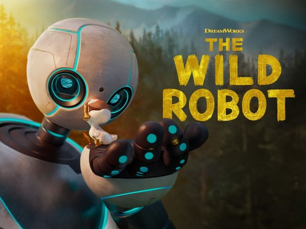

the wild robot

robot on an island
this movie is about a robot named rozum734 that ended up on a random
island during spring, that originally lived in a robot cyber city.
rozum used to help humans complete the missions humans gave the robot,
the robot was like a servant for humans that could do anything.
the robot tried helping animals, just like it used to in its
world, but there were only animals and the animals misunderstood
and thought rozum was a threat. the robot eventually gave up
and thought of a plan. the robot shut off and observed
the animals "talking" and after a few months or years of observing, the robot
had learned the animals way of communication.
start of rozums and ducks adventure
it could finnaly talk to the animals freely. one rainy night rozum
ended up being chased by a bear and ran away, she ended up falling in some bushes and
found an egg left alone, it took the egg and then a baby duck hatched.
the duck thought the robot was its mother so it kept following the robot around.
rozum got confused and tried to run away but the duck kept following the robot,
and the duck accidentally fell and landed on some possums. the possums were
arguing at eachother and didnt pay attention to the duck that was behind them, the possums
mom,pinktail had enough and and told the possums to stop and then noticed the duck,
the robot found pinktail with the duck, and pinktail gave rozum a mission: take care of the duck.
taking care of the duck
since rozum didnt know how to take care of the duck, it asked a fox named fink. fink told
rozum
that the duck needed to learn 3 important things to complete her mission:swimming,flying and eating.
fink and rozum also came up with a name for the duck: brightbill. rozum and fink quickly figured out
how to feed brightbill, they simply just found some worms in the dirt and gave it to brightbill.
so 1 out of 3 missions complete. fink and rozum deicided to make a house to
stay in, so they did. brightbill eventually grew up and one day decided to find other ducks and
maybe make friends, but it didnt end well because rozum taught brightbill to act like a robot,
just like her. brightbill and rozum went to a lake and brightbill went in to swim, he slowly got
used to it and learned how to swim, so 2 out of 3 tasts completed for rozum. when brightbill
went in the lake, he saw some geese so he decided to talk to them. the geese recognized him
as the "monsters child", and told brightbill that rozum wasnt his actual parent, he basically just
got bullied. brightbill ended up coming back shocked and mad at rozum.
brightbill is learning to fly
brightbill was so dissapointed that rozum wasnt his actual mother, he said he
would go looking for his actual parents and well, left. fink thought he would come back but he
didnt. so rozum and fink decided to look for him and tell him that, leaving them was really
not a great idea. brightbill gave in and said fine. after that, rozum wanted to teach brightbill
to fly because it was almost winter. rozum set up a place for brightbill to practise flying
he got the hang of it but not quite, so rozum got him a flying tutor, an eagle. the eagle taught
him how to properly fly and also practised a lot. rozum also met longneck, he also taught him
how to fly and he was a leader of his geese group. after some time, it was time for brightbill
to fly to a warm place, rozum said his goodbye and brightbill left.
huge snowstorm
rozum feels empty and sad without brightbill, so she tried to go
back to her cyber city, but fortunately her signal wasnt good and she couldnt go back
she tried again but again, it didnt work. so she went to her house and shut off.
during the night, she got woken up by fink, he said there was a huge snowstorm outside
and the other animals might not survive. rozum decided to gather every animal by finks
help and save them. it was very rough for rozum but she made it, she was almost dying.
there was chaos in the tiny house with every single animal in it so rozum asked for a moment of
peace before she shut off completely, and the animals agreed. after a lot of time, brightbill
came back and rozum woke up, she quickly ran to where brightbill left and saw him, she thought
that brightbill didnt need rozum anymore and she decided to run back and try to go back to her
cyber city again, this time it really worked. the robots came to take her but fink found her
and said that brighbill came and he misses you, so she quickly jumped out. the robots came after her
and after a very very rought fight against them, they got destroyed by the animals and rozum.
finnaly, roz,brightbill and fink lived happily ever after.


thanks for listening ;]
(i worked 2 days for this)